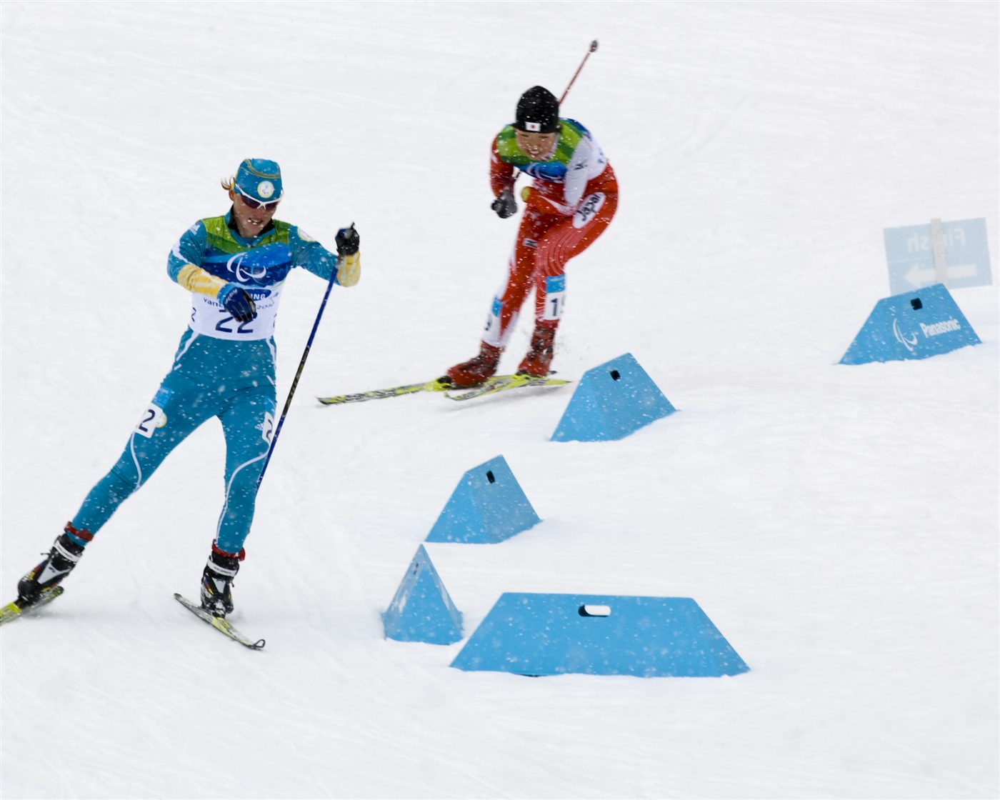
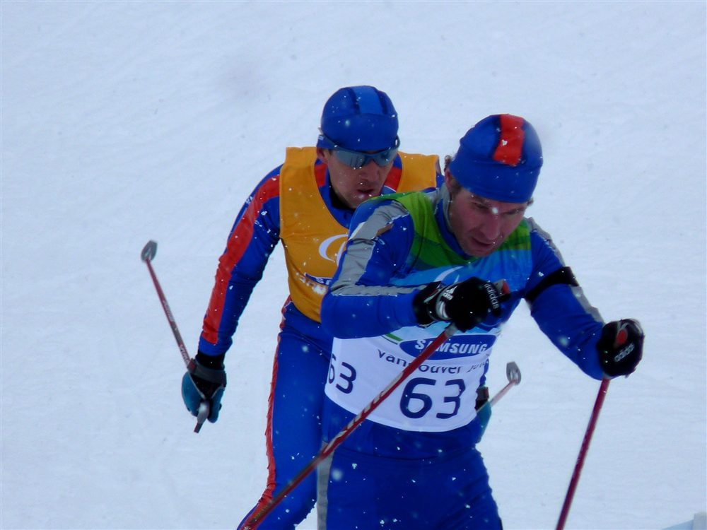
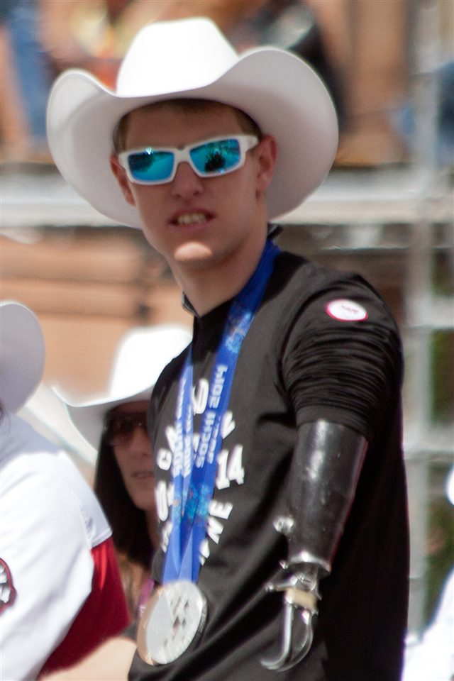
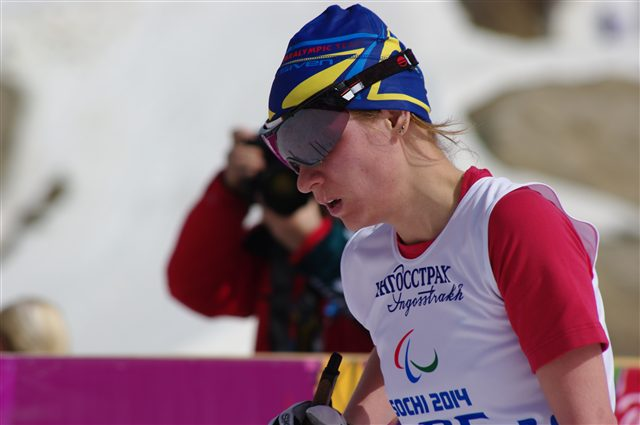
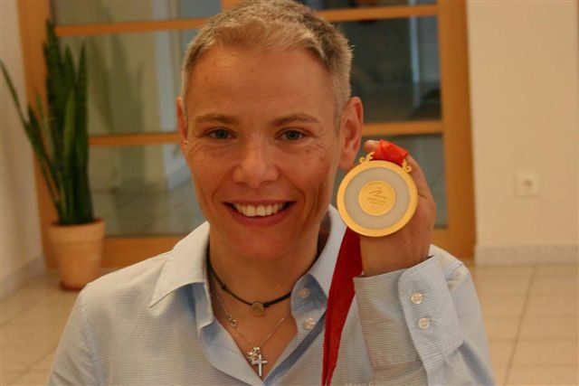
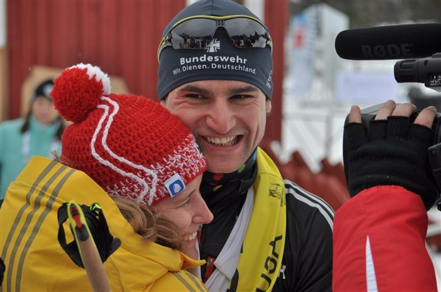
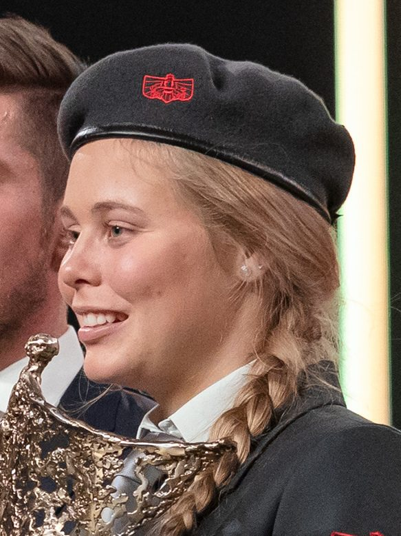

Le ski
Des boucles de ski de fond, en debout, en sit-ski ou guidé, entre chaque passage au tir.

10 m
Distance de tir
3
Catégories de handicap
5
Cibles par passage
Le para biathlon reprend le principe du biathlon — alterner ski de fond et tir — adapté aux trois catégories paralympiques : debout, assis (sit-ski) et déficients visuels. Le tir se fait à 10 mètres avec une carabine à air comprimé.
L'adaptation la plus spectaculaire concerne les déficients visuels : ils visent grâce à des cibles sonores, un signal audio dont la tonalité s'aiguise à mesure que l'arme s'aligne sur le centre. Chaque cible manquée ajoute une pénalité (tour ou temps), comme en biathlon valide.
Les para biathlètes sont souvent les mêmes athlètes complets que ceux du para ski de fond, à l'image du Canadien Mark Arendz.

Des boucles de ski de fond, en debout, en sit-ski ou guidé, entre chaque passage au tir.
Cinq cibles à 10 m, à la carabine à air comprimé, en position couchée.
Les déficients visuels visent à l'oreille : le son devient plus aigu près du centre de la cible.
Les athlètes assis tirent depuis leur luge, après un effort fourni uniquement aux bras.
Chaque cible manquée coûte un tour de pénalité ou du temps ajouté, selon le format.
Un coefficient par classe ajuste le temps de ski pour comparer équitablement les handicaps.
Lieu
Stade de fond du Lago di Tesero — Val di Fiemme
Capacité
≈ 10 000 places (site partagé avec le para ski de fond)
Accès
Navettes JO accessibles depuis Cavalese et Predazzo. Tribunes PMR aménagées.
Billet
À partir de 20 € · 55 € (longues distances)
Température
Vallée de montagne — prévoir -6 °C, 1 000 m d'altitude

 Canada
Canada

 Allemagne
Allemagne
Allemagne
 Autriche
Autriche